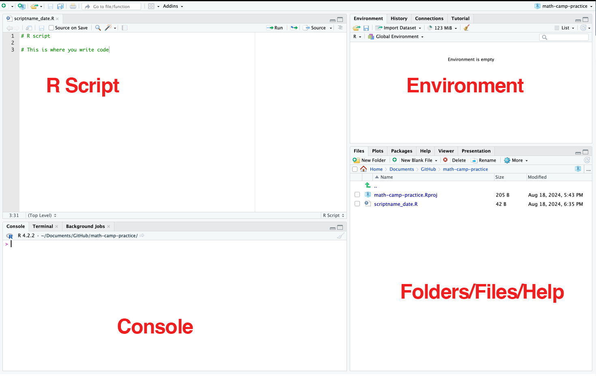
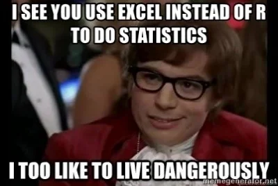

Day 2 - R Basics

Math Session
Linear Algebra
Vector and Matrices
System of equations
Links
Software Session
Why Programming or Coding?
There are a lot of fancy answers to it. But the key idea is that you want to be lazy about repetitive tasks (MBAs call it being “productive”).
Many tasks - data cleaning, wrangling, visualization, and statistical analysis - require you to do them many times. Moreover, you would want to be able to reproduce and replicate your thinking about all of the tasks mentioned above on many different datasets and sometimes even on the same dataset after some time.
Coding is about formalizing your thinking about how you treat the data and automating the formalization task to be done repetitively. It improves efficiency, enhances reproducibility, and boosts creativity when it comes to finding new patterns in your data.
Guidelines for data and statistical analyses:1
- Accuracy: Write a code that reduces the chances of making an error and lets you catch one if it occurs.
- Efficiency: If you are doing it twice, see the pattern of your decision-making and formalize it in your code. Difference between Excel and coding
- Replicate-and-Reproduce: Ability to repeat the computational process which reflects your thinking and decisions that you took along the way. Improves transparency and forces one to be deliberate and responsible about choices during analyses.
- Human Interpretability: Writing code is not just about analyzing but allowing yourself and then others to be able to understand your analytic choices.
- Public Good: Research is a public good. And the code allows your research to be truly accessible. This means you write a code that anyone else who understands the language can read, reuse, and recreate without you being present. We essentially ensure that by writing a readable and ideally publicly accessible code.
R and RStudio
R is a free open-source statistical programming language. We generally use R through RStudio which is an integrated development environment (IDE). Essentially, it is the graphic user interface that allows us to use R efficiently. It has point-and-click functionality also (which we would not use a lot).
R Scripts: This is where put your code in a script. The script is saved with a .R extension. An R script is a text file that you can read on text editors too. We use RStudio to run the code in a way that the computer understands.
Console: Output from your code appears here. You can also write the code directly here. But it does not get saved. Also, by default, it shows only a limited number of previous steps (commands + outputs). Not a good practice to code here.
Environment: All the objects, datasets, lists, etc that you have created/loaded in the environment appear here. Alongside, you also see the custom functions that you might create.
File Browser/Help/Plot: Internal file navigator and help documentation for packages and functions appear here. Further, when you plot anything, that also gets shown here.
Comments: R interprets every line in the script as a separate command. And it does for each line unless preceded by a #. Comments signal to R that what follows the # is to be ignored.We use comments to write explanatory notes about the code. A comment should explain the purpose of a command or code and not just be a description of what it does.
Basics
R uses <- as the assignment operator. To the left of it is an object (sort of like a box that stores values which are to the right of the operator).
Syntax: object <- value/data
- Create a new
.Rscript. Name it and save it on your system.
- R does all the functions of a calculator. Write some code in the script that
Adds two numbers
Multiplies three numbers
Prints your name
Run each command separately by using
cmd + Enter / ctrl + Enter.Assign the outputs from 2 to different objects.
Print the objects with some description using
paste().Run the whole file.
You can start a new script through many different ways:
ctrl + shift + nClick on the tiny white page button with a green+sign on the upper left corner of the screen
Click on
File > New file> R script
Saving a script:
Ctrl + SEnter the name of the script, and add
.Ras a suffix. For example: xyzbasic.R
#2.
2 + 7
56 * 9 * 33
print("Parushya")The output is displayed in the console.
#4
sum_2 <- 2 + 7
prod_3 <- 56 * 9 * 33
name <- "parushya"#5
paste("Sum of 2 and 7 is", sum_2)
paste("Product of 56, 9 and 33 is", prod_3)
paste("This very fancy R code was written by", name)Objects, Datatypes, and Data Structures
Everything in R is called an “object”
“Objects” contain “data”.
The three variables we created - sum_2, prod_3, and name - were all basic objects.
R has 5 basic or “atomic” classes/datatypes of objects.
Character - (abc)
Numeric - (real numbers) - (1,7.5,etc)
Integer - (1,2,0,-896)
Logical - (True/False)
Complex - (1, 0+i)
Data structures are bigger containers that hold many objects.
Two basic or “atomic” data structures in R are:
Vectors: can hold objects of same datatype
Lists: can hold objects with different datatypes
Lists
If we want to create something that stores objects of different classes together, we use another data structure called list.
A list can contain two or more classes of objects with different lengths.
Additional Links
- On Coding Practices
- On Tidyverse
R for DataScience, by Hadley Wickham et al.
- This is a highly recommended book written by creators of tidyverse.
- Tutorials for R Programming
Inspired by the summary provided by Prof Aaron Williams’ course on Data Analysis offered at McCourt School. Strongly recommended to learn good coding using R↩︎